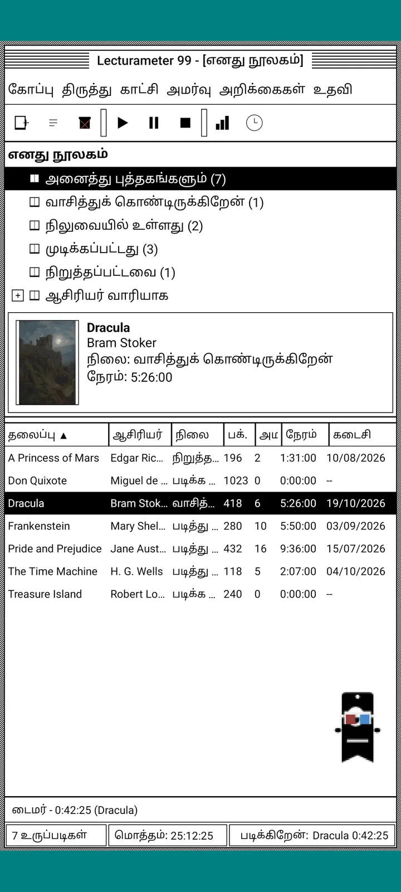
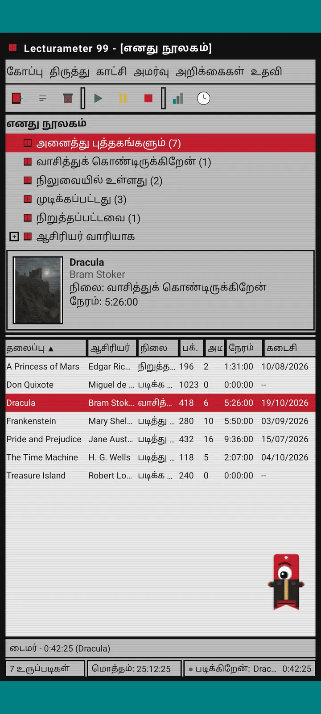
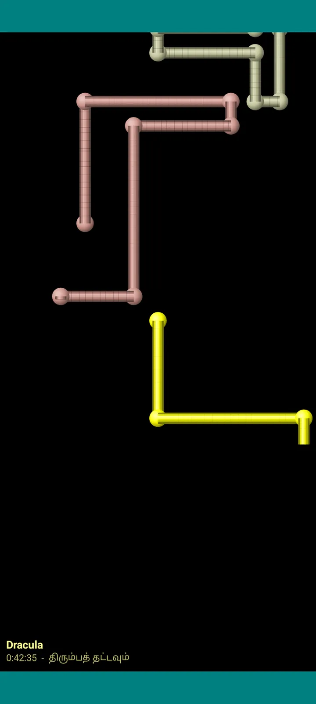

Lecturameter 1999
1999-ல் CD-ROM-லிருந்து நிறுவியது போன்ற Lecturameter. சாளரங்கள், மெனுக்கள், அட்டவணைகளுடன் செயலியின் மாற்று கிளையன்ட்; உங்கள் உண்மையான காப்புப்பிரதிகளைத் திறக்கும்.

இது என்ன
தொண்ணூறுகளின் பிற்பகுதி டெஸ்க்டாப் நிரல், உங்கள் ஃபோனில் இயங்குகிறது. நீலப்பச்சை டெஸ்க்டாப் மேல் ஒரு சாளரம், மெனு பார், கருவிப்பட்டை, கோப்புறை மரம், அடர்த்தியான அட்டவணை மற்றும் நிலைப்பட்டி.
- நூலக மரம்: அனைத்துப் புத்தகங்கள், வாசிக்கிறேன், நிலுவையில், முடிக்கப்பட்டவை, கைவிடப்பட்டவை மற்றும் ஆசிரியர் வாரியாக
- தலைப்பு, ஆசிரியர், நிலை, பக்கங்கள், அமர்வுகள், நேரம் மற்றும் கடைசியாக வாசித்தது கொண்ட அட்டவணை. வரிசைப்படுத்த நெடுவரிசைத் தலைப்பைத் தட்டுங்கள்
- Lecturameter பயன்படுத்தும் அதே பட்டியலைக் கொண்டு உண்மையான புத்தகத் தேடல்
- Lecturameter காப்புப்பிரதியையும் Goodreads CSV-யையும் இறக்குமதி, ஏற்றுமதி செய்கிறது. உங்கள் தரவு எதுவும் இழக்கப்படாமல் உள்ளேயும் வெளியேயும் செல்லும்

ஏன் இது உள்ளது
ஒரு சோதனை: உண்மையான செயலியைத் தொடாமல், முற்றிலும் வேறுபட்ட வடிவமைப்புக் கோட்பாடுகளின் கீழ் Lecturameter-இன் யோசனையை மீண்டும் புதிதாக உருவாக்குவது. எல்லா மறுவிளக்கங்களிலும் 1999 தான் எனக்கு மிகவும் பிடித்தது; அதனால் ஒரு வேடிக்கைப் பயிற்சியாக அதை முடித்து, முழுமையான கிளையன்ட்டாக மாற்றினேன். இது வேண்டுமென்றே Lecturameter-ஐ விட எளிமையானது: இது ஒரு சோதனை, கொள்கையளவில் இனி மேம்பாடு இருக்காது.
- பச்சை LCD காட்சியுடன் மிதக்கும் சாளரத்தில் நேரங்காட்டி. அது நகரும், பணிப்பட்டிக்குச் சுருங்கும், நிலைப்பட்டியில் தொடர்ந்து எண்ணும்
- நிறுத்தும்போது, அமர்வைச் சேமிக்கும் உரையாடல் உங்கள் பக்கங்களைக் கேட்டு, Lecturameter போலவே உங்கள் வேகத்தைக் கணக்கிடுகிறது
- சேமித்த அமர்வுகள் Lecturameter அமர்வுகளே: Lecturameter 1999 காப்புப்பிரதியை ஏற்றுமதி செய்து Lecturameter-ல் இறக்குமதி செய்தால் அவை நவீனச் செயலிக்குத் திரும்பி வரும்.

வாசிப்பு அறிக்கை
புள்ளிவிவரங்கள் ஒரு அச்சிட்ட அறிக்கை: சுருக்கம், தொகுதிப் பட்டைகளுடன் ஒவ்வொரு புத்தகத்துக்கான நேரம், ஒரு நாளைக்கான பக்கங்களில் வேகம், எழுத்துகளால் வரையப்பட்ட ஆண்டின் நாட்காட்டி மற்றும் கடைசி ஏழு நாட்கள்.

அமர்வு வரலாறு
புத்தகம் வாரியாகத் தொகுத்த அமர்வுகள், கூட்டல் கழித்தல் குறிகளுடன் மரமாக; மேலே ஐந்து எண்கள்: அமர்வுகள், மொத்த நேரம், பக்கங்கள், நிமிடத்துக்கான பக்கங்கள் மற்றும் நாளுக்கான பக்கங்கள்.

அமர்வைச் சேமி
தேதி, நிமிடங்கள், முதல் மற்றும் கடைசிப் பக்கம், கருத்து. நீங்கள் தட்டச்சு செய்யும்போதே சுருக்கம் பக்கங்களையும் வேகத்தையும் கணக்கிடுகிறது. கடைசிப் பக்கத்தை அடைந்தால், புத்தகத்தை முடித்தீர்களா என்று கேட்கும்.

Pagi 99
பாகியும் 1999-க்குப் பயணிக்கிறது: அக்காலத்து அலுவலக உதவியாளர்களைப் போல பிக்சல் வடிவில் திரையில் சுதந்திரமாக. இழுத்துச் செல்லலாம், தட்டினால் ஒரு வரி சொல்லும், மஞ்சள் குமிழிகளில் குறிப்புகளைக் காட்டும்.
தீம்கள்
Classic 98 இலவசம், இயல்புநிலையும் அதுவே. தொகுப்பு மேலும் ஆறைச் சேர்க்கிறது; ஒவ்வொன்றுக்கும் தனி பின்னணியும் தனி ஒலிகளும் உண்டு.

காட்சி மெனுவிலிருந்து தேர்ந்தெடுங்கள்
காட்சி, தீம்... ஏழு தீம்களுடன் ஒரு சாளரத்தைத் திறக்கும். மாற்றம் எல்லாச் சாளரங்கள், நேரங்காட்டி மற்றும் பாகி அனைத்துக்கும் ஒரே நேரத்தில் சென்றடையும்.
- Classic 98, இலவசம், இயல்புநிலை: சாம்பல் சாளரங்கள், கடற்படை நீலத் தலைப்புப் பட்டைகள் மற்றும் நீலப்பச்சை டெஸ்க்டாப்
- தீம் தொகுப்பு: 1984, Gumdrop, Memory, Towers, Core மற்றும் 8-bit
- ஒவ்வொரு தீமும் தனக்கே உரிய டெஸ்க்டாப் பின்னணியையும், தட்டல்கள், சாளரங்கள், நேரங்காட்டிக்கான ஒலிகளையும் கொண்டுவருகிறது
- அமைதியாக வாசித்தால், காட்சி, தீம் ஒலிகள் என்பது ஒலிகளை அணைக்கும்

Classic 98
சாம்பல் சாளரங்கள், கடற்படை நீலத் தலைப்புப் பட்டைகள் மற்றும் நீலப்பச்சை டெஸ்க்டாப். இலவசம், செயலி இதனுடன்தான் திறக்கும்.

1984
ஒரு-பிட் கருப்பு வெள்ளை டெஸ்க்டாப், புள்ளி வடிவங்களும் சதுர சாளரங்களும் கொண்டது.

Gumdrop
ஒளிபுகும் நிறப் பிளாஸ்டிக், வட்டமான பொத்தான்கள், பின்னணியில் கோடுகள்.

Memory
தொண்ணூறுகளின் டிஸ்க் கன்சோலின் மெனுக்கள், அடர் நீல நிறங்களில்.

Towers
தொண்ணூறுகளின் இன்னொரு டிஸ்க் கன்சோல், இரவு நீலமும் வெளிர் நீலக் கோடுகளும்.

Core
கருப்பு பச்சை கன்சோல், ஒருபோதும் அணையாத திரை போல.

8-bit
பருமனான பிக்சல்கள், சில நிறங்கள், கட்டை எழுத்துகள்.

பணம் செலுத்தும் முன் முயற்சி செய்யுங்கள்
பூட்டிய தீமைத் தட்டினால் முழுச் செயலியும் அதற்கு மாறும். வாங்காமல் மூடினால், முந்தைய தீம் திரும்பும்.
திரைக்காப்புகள்
நேரங்காட்டி ஓடிக்கொண்டிருக்கும்போது, நீங்கள் ஃபோனைத் தொடாமல் விட்டால் மட்டுமே இவை தோன்றும். 1, 3 அல்லது 5 நிமிடம் காத்திருக்கும், அல்லது ஒருபோதும் வராது. ஒரு தட்டலில் திரும்பிவிடலாம், நேரங்காட்டி தொடர்ந்து எண்ணும்.

பறக்கும் புத்தகங்கள்
பிக்சல் புத்தகங்கள் தங்கள் அட்டைகளை அடித்துக்கொண்டு கருப்புத் திரையில் பறக்கின்றன.

எழுத்து வெளி
பல எழுத்துமுறைகளின் எழுத்துகள் விண்மீன் வெளி போல மிதந்து செல்கின்றன.

பக்கக் குழாய்கள்
பக்கங்களால் ஆன குழாய்கள், திரை நிரம்பும் வரை தாமாகவே வரைந்துகொள்கின்றன.

துள்ளும் பாகி
பாகி திரையின் ஓரங்களில் மோதித் துள்ளுகிறது.

வாசிப்புக் கடிகாரம்
அமர்வு நேரம் பெரிய LCD இலக்கங்களில்.

பாகிக்கான உடைகள்
பாகி 99-க்கு எட்டு உடைகள். காட்சி, பாகியின் உடை... என்பதில் தேர்ந்தெடுக்கலாம்; பணம் செலுத்தும் முன் அணிந்து பார்க்கலாம்.
- கேசட் பிளேயர்
- பின்னோக்கி அணிந்த தொப்பி
- 3D கண்ணாடி
- நியான் கூலிங் கிளாஸ்
- கையில் ஃப்ளாப்பி டிஸ்க்
- தோல் ஜாக்கெட்
- பாக்கெட் செல்லப்பிராணி
- அட்டைக் கிரீடம்
கடை
உங்கள் வாசிப்பைப் பதிவு செய்ய செயலி இலவசமும் முழுமையானதும் ஆகும். நீங்கள் வாங்குவது தோற்றத்தை மட்டுமே மாற்றும்.
முழுச் செயலி, நேர வரம்பு இல்லாமல்.
- நூலகம், தேடல், நேரங்காட்டி மற்றும் அமர்வுகள்
- வாசிப்பு அறிக்கையும் அமர்வு வரலாறும்
- Lecturameter காப்புப்பிரதியும் Goodreads CSV-யும், உள்ளேயும் வெளியேயும்
- Classic 98 தீமும் பாகி 99-உம்
- கணக்கும் இல்லை, விளம்பரங்களும் இல்லை
ஒருமுறை செலுத்துதல்கள், சந்தாக்கள் இல்லை.
- தீம் தொகுப்பு, €3.49: பின்னணியும் ஒலிகளும் கொண்ட 6 தீம்கள், கூடவே திரைக்காப்புகள்
- திரைக்காப்புகள், €1.99: 5 திரைக்காப்புகள்
- பாகி உடைகள், €1.99: 8 உடைகள்
- முழு 1999, €4.49: தீம்கள், திரைக்காப்புகள் மற்றும் உடைகள்
விருப்ப அன்பளிப்புகள் உதவி மெனுவில் உள்ளன, எனக்கு ஒரு காபி வாங்கித் தர விரும்பினால்.
பணம் செலுத்தும் முன் தீம்களையும் உடைகளையும் நேரடியாக முயற்சி செய்யலாம். வாங்காமல் மூடினால், உங்களிடம் இருந்தவை திரும்பும்.
Lecturameter-உடன் ஒப்பிட்டால் என்ன மாறுகிறது
Lecturameter-ஐப் போலவே
- அதே தரவு: புத்தகங்கள், அமர்வுகள், நிலைகள், மதிப்பீடுகள் மற்றும் குறிப்புகள். காப்புப்பிரதிக் கோப்பு இரண்டு செயலிகளிலும் ஒன்றே.
- தலைப்பு அல்லது ஆசிரியர் மூலம் புத்தகத் தேடல்.
- உண்மையான நேரங்காட்டி: பின்னணியிலும், செயலியை மூடினாலும் தொடர்ந்து எண்ணும்.
- கணக்கு இல்லை, விளம்பரங்கள் இல்லை, புத்தகங்களைத் தேடுவதற்கு மட்டுமே இணைப்பு.
- Lecturameter-இல் உள்ள அதே மொழிகள்.
1999 பதிப்பில் மட்டும்
- 1999-ஆம் ஆண்டு டெஸ்க்டாப் இடைமுகம். Material இல்லை.
- உண்மையான சாளரங்கள்: இழுக்கலாம், சுருக்கலாம், குறுக்கு குறியால் மூடலாம்.
- எழுத்துகளால் வரையப்பட்ட நாட்காட்டியுடன் உரை வடிவில் வாசிப்பு அறிக்கை.
- நீண்ட அழுத்தத்தில் சூழல் மெனு, விசைப்பலகை இணைத்தால் விசைப்பலகை குறுக்குவழிகள்.
- குறிப்புக் குமிழிகளுடன் பிக்சல் வடிவ பாகி 99.
- தனிப் பின்னணியும் ஒலிகளும் கொண்ட விருப்பத் தீம்கள், நேரங்காட்டி ஓடும்போது திரைக்காப்புகள் மற்றும் பாகிக்கான உடைகள்.
வேண்டுமென்றே விட்டுவிடுவது
- Pro இல்லை, சந்தா இல்லை. வாசிப்பைப் பதிவு செய்வது முழுவதும் இலவசம்; கடை தோற்றத்தை மட்டுமே விற்கிறது.
- சவால்கள், Bingo, ஆண்டு Wrapped அல்லது விட்ஜெட்டுகள் இல்லை.
- முழுமையான அமர்வு, சூழல் ஒலிகள் அல்லது Google Drive காப்புப்பிரதி இல்லை. காப்புப்பிரதி ஒரு கோப்பாகச் சேமிக்கப்படும்.
மூடிய சோதனை
Lecturameter 1999 Google Play-யில் மூடிய சோதனையில் உள்ளது. iOS பின்னர் வரும், இன்னும் தேதி இல்லை.
- குழுவில் சேருங்கள் groups.google.com/g/lecturameter-1999
- சோதனையாளராகப் பதிவு செய்யுங்கள்: play.google.com/apps/testing/com.lecturameter.r1999
- இங்கிருந்து நிறுவுங்கள்: Google Play
Google Play-யில் மூடிய சோதனையில், iOS பின்னர். வலைப்பதிவு இடுகையைப் படியுங்கள் இது எங்கிருந்து வந்தது, என்ன எதிர்பார்க்கலாம் என்பதைப் பார்க்க.